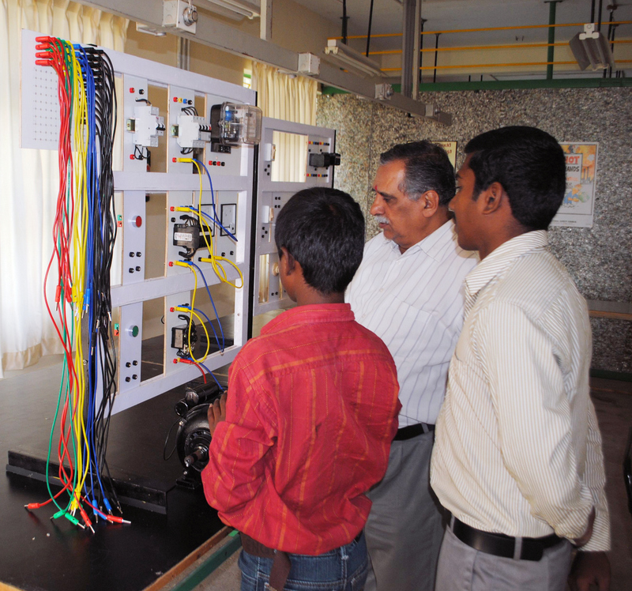
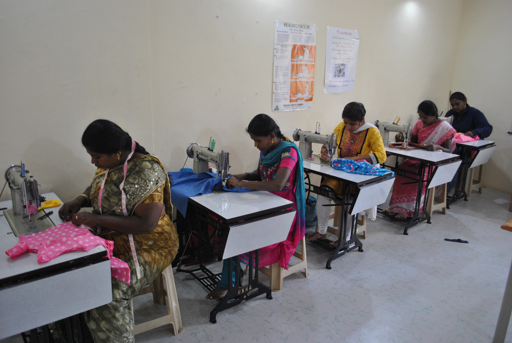

Welcome to KViK
Kaushalya Vikas Kendra (KViK) is a centre for skill development. Its prime objective is to make semi-literate youth from poor economic and social background 'employable' and to provide skilled manpower to the industries of high growth. KViK is a company set up to provide vocational training in variety of trades which are in great demand in the industry today. KViK has been set up by experienced and successful executives of companies who would like to give something back to the society.
Meet the needs of the growing Indian economy for skilled personnel.
India's economy is growing at a fast pace. This growth is improving the income level of the people and ushering in prosperity. However, the growth is hampered due to shortage of skilled manpower in all growing industries. The efficiency and quality of work is suffering for want of skilled personnel in various trades.
These skills can be imparted by vocational training to boys and girls with school education. The training needs to be job oriented with high element of on-the-job experience and soft skills. KViK’s vision is to impart such training and bridge the gap between demand and supply for skilled Human Resource in the emerging industries.
Upliftment of people from economically and socially weaker sections of the society by making them ‘employable’.
KViK has been incorporated as a Private Limited Company under section 25 of the Companies Act. Therefore, it is a “not-for-profit” organisation with the sole aim of upliftment of people from economically and socially weaker sections of the society by making them ‘employable’. The courses selected by KViK can be learnt by a student with the basic school education.
However, desire to learn, work hard and aptitude to follow discipline and self-development are necessary for a trainee to get placement and do well in a job. KViK’s curriculum provides for developing soft skills, including ‘spoken English’, which is so essential in today’s cosmopolitan nature of life in cities.
KViK's mission is to provide vocational training in trades which are in demand. It aims to extend its reach to towns and villages where large number of young people desirous of making a decent living needs to be skilled to secure employment in the industry and commerce. KViK provides short term (3 to 6 months) training for boys and girls as per government curriculum and fee structure in following skills:
Electrical repair, maintenance & repair of computers, electronic equipment repair and office assistant with TALLY, Plumbing and Carpentry and Tailoring. It has plans to introduce more skills based on the needs of the industry and availability of students. In addition, KViK runs special courses for the following stakeholders:
Eureka Forbes for technicians to install and maintain Water Purifiers.
Vidya, an NGO in education for poor, summer courses in variety of skills to make them employable.

KViK’s mission is to make employable young boys and girls in rural areas by training them skills which are needed in villages and towns, such as repair of computers/smart phones, repair of irrigation pump sets, installation of solar systems, wood working for buildings, furniture making, garment making, and so on. It’s focus will be on skills which can used to become a ‘self-entrepreneur’.
A dormitory is being set up near the KViK training centre in Weavers Colony in South Bengaluru to house students from far away villages. The training for these students will be ‘full time’ and will be completed in 2 months.
High quality training at reasonable cost is the corner stone on which KViK has built its credibility and reputation.
The KViK logo indicates the focus on 'hand skills' and what a highly skilled person can produce. A highly skilled person also is like a diamond and valued. The curriculum of KViK is based on German “Dual training” model which emphasizes class room teaching and on-the-job training in equal measure. Emphasis is on technical skills as well as soft skills like work culture, adherence to standards, safety and discipline. The courses offered by KViK are affordable to students from economically weaker sections. The cost of the high quality training is met mainly by fees, placement fee and donations. The revenue model is designed to sustain and expand the training facilities in a steady manner.
The DGET has recognised KViK as a Vocational Training Provider (VTP) after a rigorous process of scrutiny and validation of its infrastructure, faculty and other resources. Under the Skill Development Incentive scheme, test of students and issuing of certificates after completion of curriculum and training is done by assessing bodies appointed by DGETs. Tailoring course is based on agreement with USHA International with special curriculum, duration and fee structure.

Kaushalya Vikas Kendra, as the name suggests believes that every person has the basic talent. It provides opportunity for the talent to develop in to an employable skill.
The KViK courses run on part time basis to allow poor students to earn some money by odd jobs. The class duration is 2 to 3 hours per day. Training in some skills is done in multiple batches during the day in order to utilise resources optimally. The duration of the courses vary from 3 to 6 months.